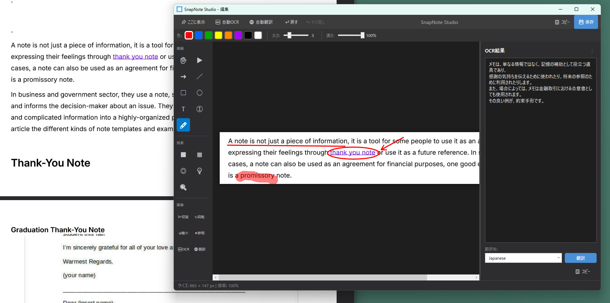

Arrows, lines, and shapes
Point at the exact control, draw a line, or frame a region with a rectangle or ellipse. Adjust color, stroke thickness, and opacity for the underlying screen.
Screen capture + annotation / Windows
Capture your screen, then add arrows, numbered steps, text, blur, and resize the image. SnapNote Studio brings explanatory materials, step-by-step guides, and bug reports into one workflow. It can also extract text from captured images with OCR and, when connected to open-source AI models through Ollama, translate it with ease.

01 / One short workflow
Start capture with the default Ctrl+Shift+S shortcut. Drag across a region or click a window, then choose arrows, shapes, text, and effects from the editor. Color, thickness, and opacity stay close to the canvas.
Copy the finished image straight to a chat or issue, or save it as a timestamped PNG. Copy-and-close and save-and-close commands keep repeated documentation work moving.
02 / Annotation toolkit
Point at the exact control, draw a line, or frame a region with a rectangle or ellipse. Adjust color, stroke thickness, and opacity for the underlying screen.
Add a short note, mark a sequence with numbered steps, or highlight an important area. Complex interactions become easier to read in the intended order.
Protect personal information and credentials before sharing. Sensitive regions can be treated in the same editor as the explanatory annotations.
Darken everything outside a chosen area or enlarge a small interface detail. Keep the larger context while directing attention to what matters.
03 / Capture precisely
Alongside free-region and window capture, SnapNote Studio can recall the previous region. Press Space before dragging to show it and Enter to capture the same coordinates again—useful for repeated tests and before/after comparisons.
Multi-monitor and high-DPI displays are supported. In the editor, zoom up to 1200%, crop, rotate 90 degrees, resize with aspect ratio preserved, and apply gentle sharpening before sharing.
Make the screen explain itself
Download the installer for Windows 10 and 11 from GitHub Releases.
Explore SnapNote Studio on GitHub ↗